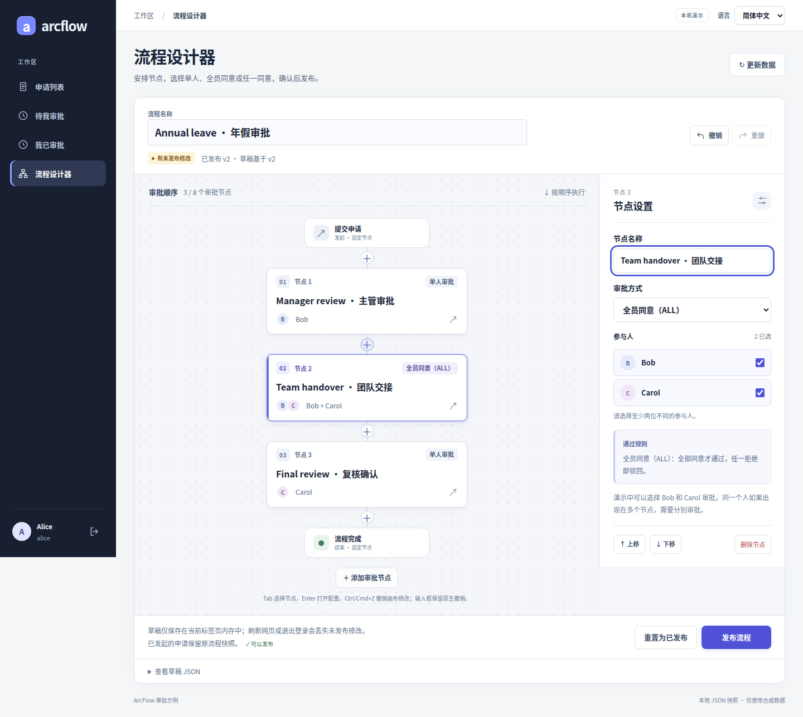
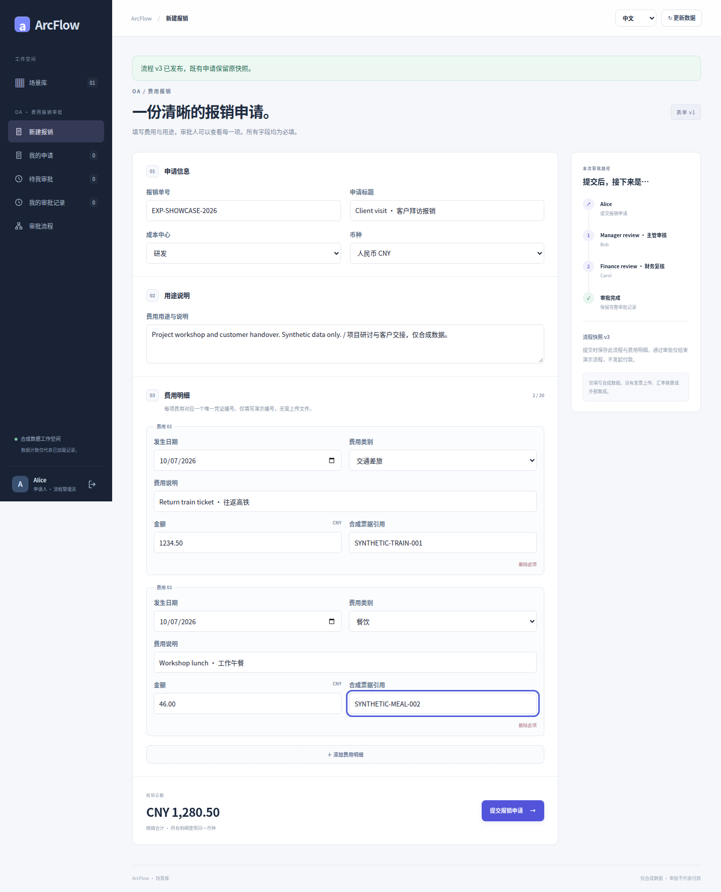
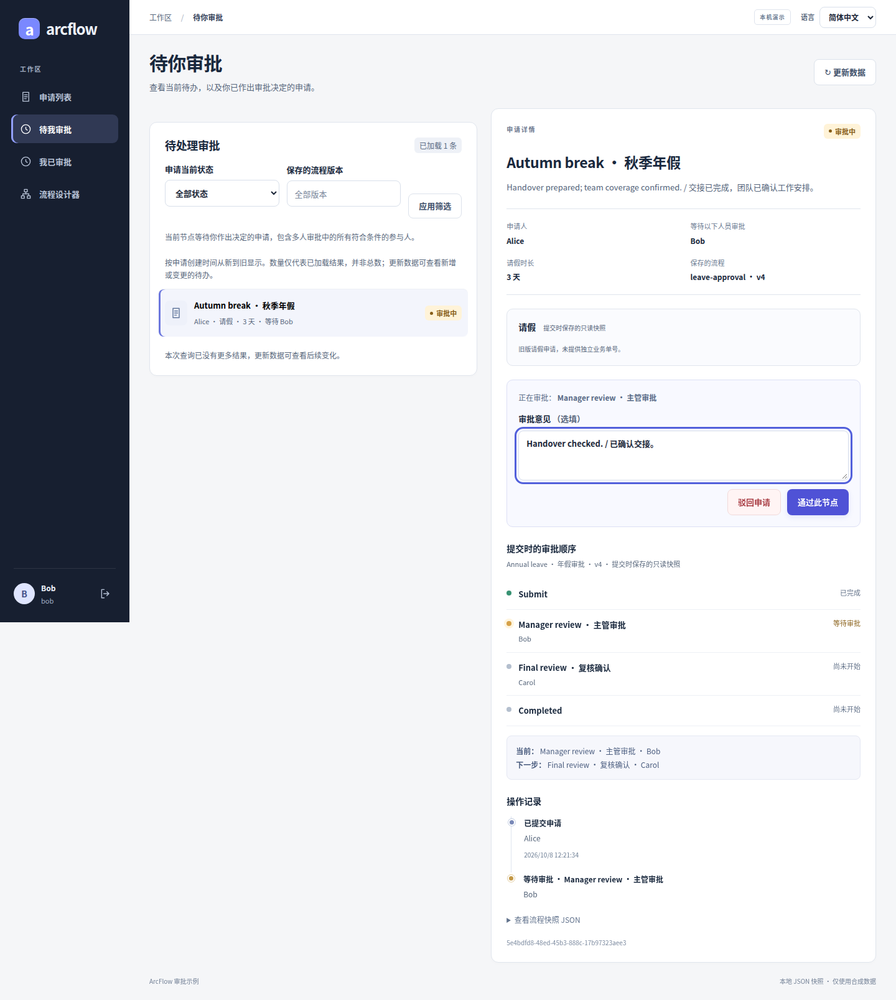
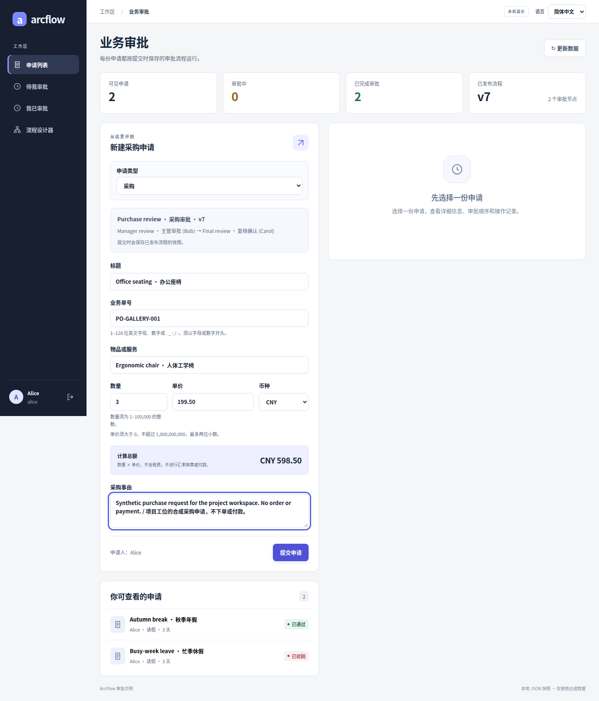
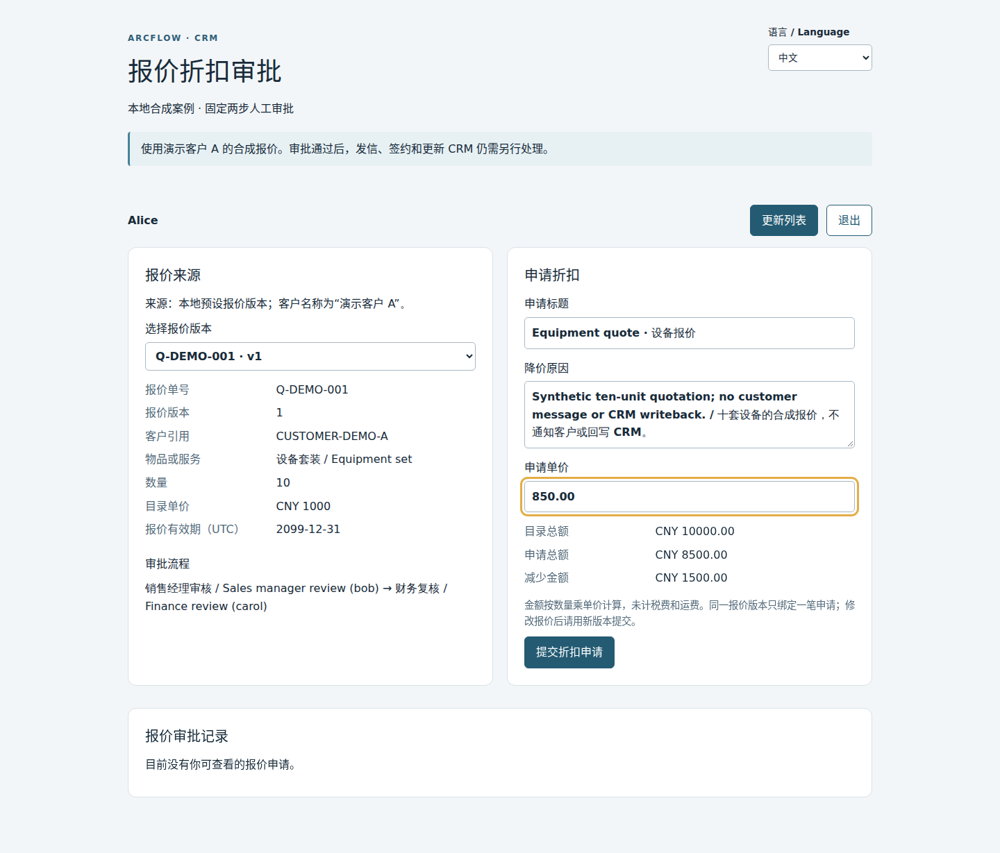

01 / ENGINE
同步 DAG 内核
按依赖顺序运行处理器，管理变量与事件。内核无第三方运行时依赖。
不承载人工等待或持久运行状态。
真实界面 / 合成演示数据
选择节点，配置人员与审批方式。每一笔申请，保留提交时的流程。

安排步骤，设置 SINGLE / ALL / ANY
保存业务字段与流程版本快照
处理当前待办，保留每个人的决定
DESIGN THE PROCESS
给审批步骤命名，选好参与人，再发布。流程变了，新申请用新版本；已提交的申请保留原样。
插入、删除、上下调整，保持每一步的先后关系。
单人处理、全员同意（ALL），或任一人同意（ANY）。
发布检查期望版本，提交保存步骤、人员与规则。
示意流程 · 顺序步骤，非通用并行网关
START WITH YOUR BUSINESS
这里展示四组真实界面。当前主线共有九种业务文档：请假、采购与报价使用各自入口，另有六个独立场景工作区。
成本中心、币种、1–20 行费用明细，连同审批流程一起保存。通过、驳回与逐人记录，都有迹可循。
票据引用为文字，不上传或验真；审批通过不会打款。当前未接入若依与 H5。
阅读场景说明
填写整天天数和事由，由当前审批人处理，再进入后续复核。待办和记录随身份切换。
这是审批示例，不计算考勤或假期余额，也不支持自动寻找直属主管。
阅读场景说明
物品、数量、单价与币种，随申请进入审批。需要审批的业务信息与当时的流程一起保留。
示例不自动下单、付款或入库；审批结果需要由宿主业务继续处理。
阅读场景说明
核对源报价与申请价格，依次由销售经理和财务审核。业务读权与审批权限分别检查。
与共享工作区隔离；未连接真实 CRM，不自动报价、通知客户或回写业务。
阅读场景说明
BUILT TO BE UNDERSTOOD
从最小的 Java 内核，到可运行的宿主示例。你可以看清依赖，再选择适合自己的接入层。
按依赖顺序运行处理器，管理变量与事件。内核无第三方运行时依赖。
不承载人工等待或持久运行状态。
人员权限、顺序步骤、快照与审批记录。默认 JSON，可选 JDBC 适配器。
审批模块有自身依赖；JDBC 需要显式接线与迁移。
Spring Boot、Vue、若依与 H5 示例，展示不同系统的接入方式。
各客户端覆盖范围不同，不代表完整生产服务。
KNOW THE BOUNDARIES
开源的价值，也在于边界透明。把缺项算进接入计划，而不是上线后再发现。
逐项查看能力目录SINGLE、ALL、ANY；流程版本、申请快照、审批历史。
付款净额、收货异常与合同条款，可决定是否进入固定审批步骤；不执行脚本或通用表达式。
动态主管、撤回、转办、定时催办、BPMN 与自动业务回写。
FROM SOURCE TO YOUR SCREEN
在本地启动示例，用 Alice 发起、Bob 审批，再由 Carol 复核。先把整个过程走一遍。
Linux / macOS / WSL · Git · Python 3.9+ · 完整 JDK 17+ · Maven 3.9+ · Node 22.22.2+（22.x，含 npm）
git clone https://github.com/JamesCube/ArcFlow.git
cd ArcFlow
git checkout 666ff64b280157e44a86f07a15fcb42f859ec11a
python3 scripts/tryout.py --check
python3 scripts/tryout.py首次运行需要联网下载依赖。等待终端显示就绪地址，从本次密码文件读取演示账号。Ctrl-C 会停止服务并删除本次试用数据；需要保留数据，请按手动启动说明操作。
完整运行说明读源码，跑示例，告诉我们你的使用场景。